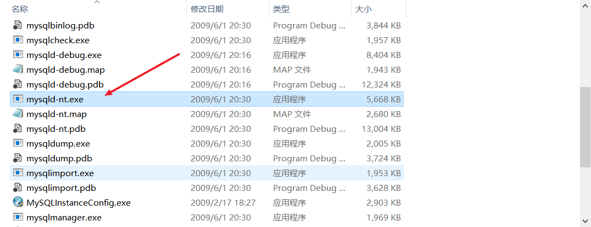

安装的独立MySQL
之前学习MySQL时还没有安装集成环境，用得也挺舒服的。
安装好后会在系统服务中添加MySQL服务，开启命令：net start mysql，但现在对我来说已经没用了。
bin目录下的 mysqld-nt.exe 也就是启动MySQL服务用的。
wamp的MySQL
wamp也还可以，就是版本太少了，迫不得已转战phpstudy。
当时安装好wamp后，也没遇到什么大问题，只是有时候系统的MySQL服务没关，导致连接不上，关掉即可（命令关闭或者服务中关闭）。
phpstudy的MySQL
安装好后就是不能启动MySQL服务，查询资料解释如下：
可能是之前已经装过Mysql，要把系统服务里面的MySQL删除，留下MySQLa服务。
在cmd命令行下输入：sc delete mysql即可删除。
的确，这样就能够启动phpstudy自带的MySQL服务了。但是原先系统安装的MySQL服务给删除了，不方便一键启动了，毕竟做项目啥的数据库文件还是喜欢放在本地第一次安装的MySQL中，因为扩展多，支持的功能多（我也没有项目可做！）。
分别启动三个MySQL服务
首先，命令行下输入 mysql -uroot -p 就可以连接一个本地的MySQL服务。
连接wamp的MySQL
首先打开任务管理器，看一下其他的MySQL服务是不是还在运行，一般是在详细信息中显示 mysqld.exe 或者 mysqld-nt.exe 。
确保没有其他正在运行就直接打开wamp，它就会运行MySQL服务，直接命令行下 mysql -uroot -p 就可连接。
记住退出wamp之前将所有服务先关闭。
连接phpstudy的MySQL服务
同样先查看有没有其他MySQL服务正在运行。还有就是得删除原先系统安装的MySQL服务。
运行phpstudy后就命令行下连接MySQL。
记住退出phpstudy之前将所有服务先关闭。
连接系统安装的MySQL服务
首先确保没有其他MySQL服务在运行，有的话直接kill。
然后找到 bin 目录下的 mysql-nt.exe ，双击运行。命令行下运行也可，但是会占用当前命令行。

命令连接MySQL服务即可。
同样，记得关闭这个服务，直接在任务管理器中暴力kill。


评论加载中